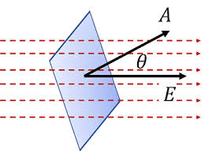
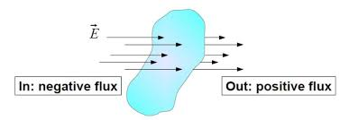
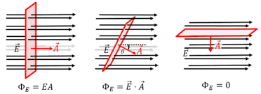

Electric flux is a fundamental concept in electromagnetism that measures the "flow" of electric field lines through a surface. It's the key quantity in Gauss's law and provides a powerful way to understand electric fields and their behavior.
What is Electric Flux?
Fundamental Definition
Electric flux is the measure of how much electric field passes through a given surface area. It represents the "number" of electric field lines crossing a surface.
Think of electric flux as counting how many electric field lines pass through a surface. Just like water flowing through a pipe, electric field lines can "flow" through a surface, and the flux tells us how much of this flow occurs.

Electric field lines passing through a surface - the flux measures this "flow".
Mathematical Definition
Electric Flux Formula
$$\Phi_E = \int \vec{E} \cdot d\vec{A}$$
Where:
Φ_E: Electric flux (N⋅m²/C or V⋅m)
E: Electric field vector
dA: Infinitesimal area element vector
·: Dot product between vectors
Understanding the Dot Product
The dot product E·dA can be written as:
$$\vec{E} \cdot d\vec{A} = E \cdot dA \cdot \cos\theta$$
Where θ is the angle between the electric field and the normal to the surface.
Physical Interpretation
Water Flow Analogy
Think of electric flux like water flowing through a net:
Electric field: Like the velocity of water
Surface: Like the net catching the water
Flux: Like the amount of water passing through the net
Angle: If the net is tilted, less water passes through
Key Insights
Perpendicular field: Maximum flux when E is perpendicular to surface
Parallel field: Zero flux when E is parallel to surface
Angle dependence: Flux depends on the angle between E and surface normal
Sign: Positive flux means field lines point outward, negative means inward
Simple Cases
Uniform Electric Field Through Flat Surface
For a uniform electric field E through a flat surface of area A:
$$\Phi_E = EA\cos\theta$$
Where θ is the angle between E and the normal to the surface.
Example 1: Flux Through a Square Surface
Problem: A uniform electric field of 100 N/C is directed at 30° to the normal of a square surface with area 2 m². Calculate the electric flux.
Solution Steps:
Given: E = 100 N/C, A = 2 m², θ = 30°
Formula: Φ_E = EA cos θ
Substitute: Φ_E = (100 N/C)(2 m²) cos(30°)
Calculate: Φ_E = 200 N⋅m²/C × 0.866
Result: Φ_E = 173.2 N⋅m²/C
Answer: The electric flux is 173.2 N⋅m²/C.
Flux Through Closed Surfaces
Area Vectors for Closed Surfaces
For any closed surface (like a sphere, cube, or satellite), the area vector at each point always points outward from the surface. This outward direction is a standard convention in physics and is essential for applying Gauss's law (covered next) and calculating net electric flux. If you imagine a balloon, the area vector at every point on the surface points away from the inside, out into space.

Sign Convention
Flux Sign Rules
Positive flux: Field lines point outward from the surface
Negative flux: Field lines point inward to the surface
Zero flux: No field lines pass through the surface
Example 2: Flux Through Different Surfaces
Problem: A uniform electric field of 200 N/C is directed upward. Calculate the electric flux through a horizontal surface of area 0.5 m².
Solution Steps:
Surface orientation: Horizontal surface, field is vertical
Angle: θ = 0° (field perpendicular to surface)
Flux formula: Φ_E = EA cos θ
Substitute: Φ_E = (200 N/C)(0.5 m²) cos(0°)
Calculate: Φ_E = 100 N⋅m²/C × 1
Result: Φ_E = 100 N⋅m²/C
Answer: The electric flux is 100 N⋅m²/C.
Visual Understanding
Field Line Interpretation
Electric flux can be understood in terms of field lines:
More field lines: Higher flux
Fewer field lines: Lower flux
No field lines: Zero flux
Field line density: Proportional to electric field strength

The number of field lines crossing a surface determines the flux.
Surface Orientation Effects
Orientation Dependencies
θ = 0°: Maximum flux (E perpendicular to surface)
θ = 90°: Zero flux (E parallel to surface)
0° < θ < 90°: Reduced flux by cos θ factor
θ > 90°: Negative flux (field lines enter surface)
Applications of Electric Flux
Electric Flux in Satellites and Spacecraft
Satellites and spacecraft use the concept of electric flux in several ways:
Charge management: Satellites can accumulate charge as they move through Earth's magnetic field and plasma. By monitoring electric flux, engineers can detect and control unwanted charge buildup, which could otherwise damage sensitive electronics.
Field monitoring: Some satellites carry flux sensors to measure the electric field in space. This helps scientists study Earth's magnetosphere, solar wind, and space weather, all of which affect satellite operations and communications.
Electric flux is not just a theoretical concept—it's a practical tool for keeping satellites safe and for exploring the space environment!
Flux Calculations
Electric flux is essential for understanding electric fields:
Identify field: Determine the electric field direction and magnitude
Choose surface: Pick a surface with known orientation
Calculate angle: Find the angle between field and surface normal
Apply formula: Use Φ_E = EA cos θ
Check units: Ensure proper units (N⋅m²/C)
Capacitor Calculations
Electric flux helps understand capacitor behavior:
Parallel plates: Uniform flux between plates
Fringing fields: Reduced flux at edges
Field direction: Flux depends on surface orientation
Example 3: Flux in Parallel Plate Capacitor
Problem: A parallel plate capacitor has plates of area 0.5 m² with a uniform electric field of 2000 N/C between them. Calculate the electric flux through a surface parallel to the plates.
Solution Steps:
Surface orientation: Surface is parallel to plates
Angle: θ = 90° (E perpendicular to surface normal)
Flux formula: Φ_E = EA cos θ
Substitute: Φ_E = (2000 N/C)(0.5 m²) cos(90°)
Calculate: Φ_E = 1000 N⋅m²/C × 0
Result: Φ_E = 0
Answer: The electric flux is zero because the surface is parallel to the electric field.
Common Mistakes to Avoid
⚠️ Common Errors
Forgetting cos θ: Not accounting for surface orientation
Wrong units: Confusing N⋅m²/C with V⋅m
Sign errors: Not considering flux direction
Surface choice: Picking inappropriate surfaces for calculations
Vector nature: Forgetting that E and dA are vectors
Practice Problems
Practice Problem 1
Problem: A uniform electric field of 500 N/C makes an angle of 45° with the normal to a circular surface of radius 0.2 m. Calculate the electric flux.
Click for solution
Solution:
Area: A = πr² = π(0.2)² = 0.126 m²
Flux formula: Φ_E = EA cos θ
Substitute: Φ_E = (500 N/C)(0.126 m²) cos(45°)
Calculate: Φ_E = 63 N⋅m²/C × 0.707
Result: Φ_E = 44.5 N⋅m²/C
Answer: The electric flux is 44.5 N⋅m²/C.
Practice Problem 2
Problem: A cube of side length 0.1 m is placed in a uniform electric field of 1000 N/C directed along the x-axis. Calculate the flux through each face of the cube.
Click for solution
Solution:
Area of each face: A = (0.1 m)² = 0.01 m²
Faces perpendicular to x-axis: θ = 0° and 180°
Flux through front face: Φ = (1000 N/C)(0.01 m²) cos(0°) = 10 N⋅m²/C
Flux through back face: Φ = (1000 N/C)(0.01 m²) cos(180°) = -10 N⋅m²/C
Faces parallel to x-axis: θ = 90°
Flux through side faces: Φ = (1000 N/C)(0.01 m²) cos(90°) = 0
Answer: Front face: +10 N⋅m²/C, back face: -10 N⋅m²/C, side faces: 0 N⋅m²/C each.
Key Concepts Summary
Electric flux: Measures electric field "flow" through a surface
Mathematical form: Φ_E = ∫E·dA = EA cos θ for uniform fields
Angle dependence: Maximum when E is perpendicular to surface
Angle dependence: Maximum when E is perpendicular to surface
Sign convention: Positive for outward flux, negative for inward
Units: N⋅m²/C or V⋅m
Applications: Gauss's law problems, capacitor analysis
Quick Reference
General flux: \(\Phi_E = \int \vec{E} \cdot d\vec{A}\)